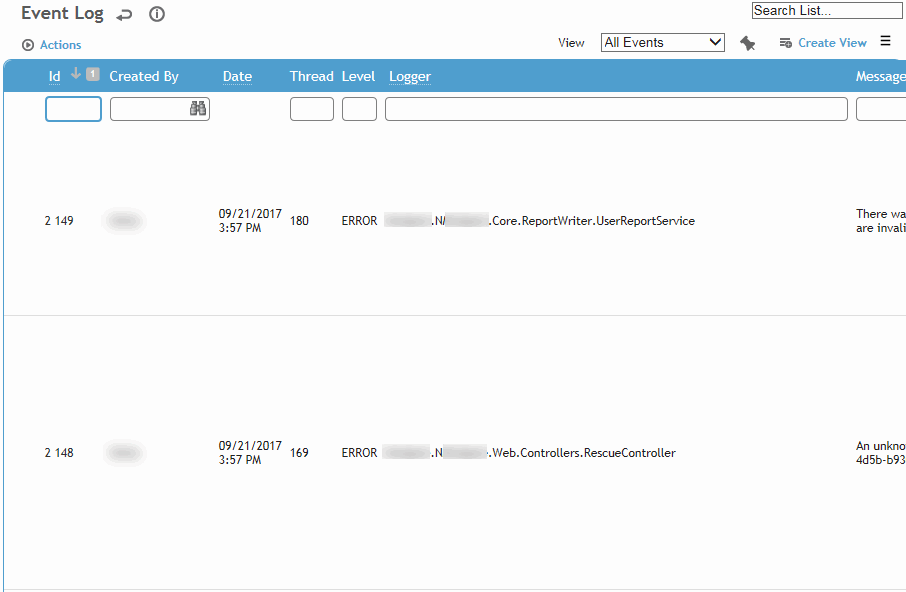
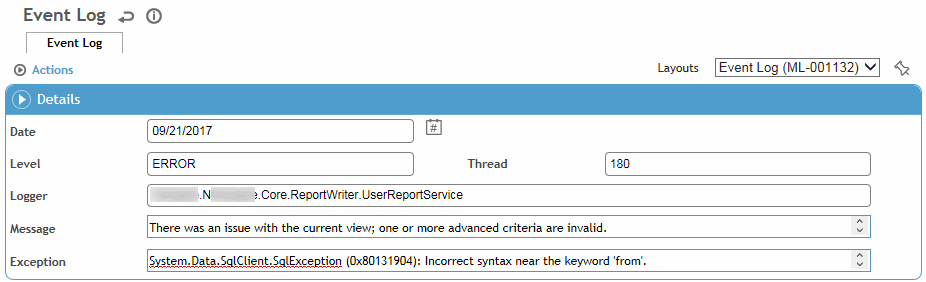

The event log allows you to see system-generated messages that have been logged to the database. The log includes displays the date/time of the event, the logger (source of the event), and a brief message describing what occurred.
The entry also shows the Server Time Zone and the User Date Time (when the event was logged, converted to the user's time zone, which might be different from the server time zone). If the server time zone is not available for an event, or if the event occurred prior to the 2023.2 release, both fields will be empty.

In the Administrator menu, click Event Log.
Enter ERROR in the Level field at the top to filter the list to only show system erorrs.
Click a link to view details of a log entry.

Events are retained in a buffer and only appear in the event log once the buffer is full (100 records for hosted clients or manually-configured for self-hosted clients) or after the nightly recycle of the application.